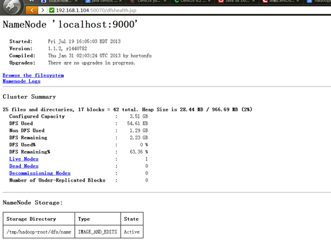

1 简介
分布式存储
分布式计算
2 版本
http://hadoop.apache.org/releases.html#Download
2.1 Download
· 1.1.X - current stable version, 1.1 release
· 1.2.X - current beta version, 1.2 release
· 2.X.X - current alpha version
· 0.23.X - simmilar to 2.X.X but missing NN HA.
· 0.22.X - does not include security
· 0.20.203.X - old legacy stable version
· 0.20.X - old legacy version
Releases may be downloaded from Apache mirrors.
3 下载
4 Required Software
Required software for Linux and Windows include:
1. JavaTM 1.6.x, preferably from Sun, must be installed.
2. ssh must be installed and sshd must be running to use the Hadoop scripts that manage remote Hadoop daemons.
http://www.oracle.com/technetwork/java/javase/downloads/jdk-6u32-downloads-1594644.html
. vi /etc/profile // 设置环境变量
在文件最后加上
export JAVA_HOME=/usr/java/jdk1.6.0_31 export CLASSPATH=.:%JAVA_HOME%/lib/dt.jar:%JAVA_HOME%/lib/tools.jar export PATH=$PATH:$JAVA_HOME/bin
5 安装
5.1 安装2
6 配置
http://hadoop.apache.org/docs/r1.1.2/single_node_setup.html
6.1 Standalone Operation
By default, Hadoop is configured to run in a non-distributed mode, as a single Java process. This is useful for debugging.
说明： 使用的本地文件系统，没有使用分布式文件系统。 方便执行map/reducer操作
The following example copies the unpacked conf directory to use as input and then finds and displays every match of the given regular expression. Output is written to the given output directory.
$ mkdir input
$ cp conf/*.xml input
$ bin/hadoop jar hadoop-examples-*.jar grep input output 'dfs[a-z.]+'
$ cat output/*
运行wordcount程序
查看结果
WordCount原理
http://www.cnblogs.com/beanmoon/archive/2012/12/07/2804183.html
6.2 Pseudo-Distributed Operation
http://hadoop.apache.org/docs/r1.1.2/single_node_setup.html#Prepare+to+Start+the+Hadoop+Cluster
Hadoop can also be run on a single-node in a pseudo-distributed mode where each Hadoop daemon runs in a separate Java process.
说明：使用分布式文件系统，所有操作在分布式文件系统中。 需要通过特殊的方式访问分布式文件系统。
进程相互通讯
主要有文件系统进程
NameNode
DataNode
Map/Reducre进程
JobTracker
进程 通讯使用ssh
6.2.1 Setup passphraseless ssh
Now check that you can ssh to the localhost without a passphrase:
$ ssh localhost
If you cannot ssh to localhost without a passphrase, execute the following commands:
$ ssh-keygen -t dsa -P '' -f ~/.ssh/id_dsa
$ cat ~/.ssh/id_dsa.pub >> ~/.ssh/authorized_keys
进程相互通讯需要使用ssh。
必须设置

6.2.2 查看文件系统状态
6.2.3 查看Job
6.2.4 存储计算
Copy the input files into the distributed filesystem:
$ bin/hadoop fs -put conf input

Run some of the examples provided:
$ bin/hadoop jar hadoop-examples-*.jar grep input output 'dfs[a-z.]+'
Examine the output files:
Copy the output files from the distributed filesystem to the local filesytem and examine them:
$ bin/hadoop fs -get output output
$ cat output/*
View the output files on the distributed filesystem:
$ bin/hadoop fs -cat output/*
再分布式文件系统中拷贝，拷出。
6.3 Fully-Distributed Operation
多机 Name Data Job
http://hadoop.apache.org/docs/r1.1.2/cluster_setup.html
集群安装
http://blog.csdn.net/ab198604/article/details/8250461
各个机子配置一样，有利于自动化。
Installing a Hadoop cluster typically involves unpacking the software on all the machines in the cluster.
The Hadoop daemons are NameNode/DataNode and JobTracker/TaskTracker.
These are the masters.
Typically one machine in the cluster is designated as the NameNode and another machine the as JobTracker, exclusively.
These are the slaves.
The rest of the machines in the cluster act as both DataNode and TaskTracker.
The Hadoop daemons are NameNode/DataNode and JobTracker/TaskTracker.
http://marysee.blog.51cto.com/1000292/629405
NameNode master 192.168.1.104
DataNode node1 192.168.1.106
DataNode node2 192.168.1.105
三台机子互相ssh，不需要输入用户名和密码
oop采用的是ssh的方法通过密钥验证及数据加解密的方式进行远程安全登录操作，当然，如果hadoop对每个结点的访问均需要进行验证，其效率将会大大降低，所以才需要配置SSH免密码的方法直接远程连入被访问结点，这样将大大提高访问效率。
(3) 让主结点(master)能通过SSH免密码登录两个子结点（slave）
修改配置文件
Master
下面开始修改hadoop的配置文件了，即各种site文件，文件存放在/hadoop/conf下，主要配置core-site.xml、hdfs-site.xml、mapred-site.xml这三个文件。
配置name目录和data目录
七、配置masters和slaves文件
根据实际情况配置masters的主机名，在本实验中，masters主结点的主机名为master,
于是在masters文件中填入：
同理，在slaves文件中填入：
复制配置文件
6.3.1 主节点相关操作
（格式化master主机生成name data tmp等文件夹
启动服务
启动mapred.sh
查看node1 node2

停止服务
查看状态
注意管理防火墙

6.3.2 分布式存储和计算
拷贝到分布式存储系统中
~/hadoop-1.1.2/bin/hadoop fs -put conf input4
可能虚拟机的原因不是很稳定，经常找不到Node
在分布式系统之执行计算
~/hadoop-1.1.2/bin/hadoop jar hadoop-examples-*.jar grep input4 output4 'dfs[a-z.]+'
查看结果
结果和以前不一样
6.3.2.1 案例2
7 Hadoop配置文件详解
http://hadoop.apache.org/docs/r1.1.2/api/org/apache/hadoop/conf/Configuration.html
8 Hadoop添加新节点
1.修改新节点的host
和普通的datanode一样。添加namenode的ip
2.修改namenode的配置文件conf/slaves
添加新增节点的ip或host
3.在新节点的机器上，启动服务
[root@slave-004 hadoop]# ./bin/hadoop-daemon.sh start datanode
[root@slave-004 hadoop]# ./bin/hadoop-daemon.sh start tasktracker
4.均衡block
[root@slave-004 hadoop]# ./bin/start-balancer.sh
如果不balance我发现没有找到点，新启动的老节点。
1）如果不balance，那么cluster会把新的数据都存放在新的node上，这样会降低mapred的工作效率
2）设置平衡阈值，默认是10%，值越低各节点越平衡，但消耗时间也更长
[root@slave-004 hadoop]# ./bin/start-balancer.sh -threshold 5
3）设置balance的带宽，默认只有1M/s
1 <property>
2 <name>dfs.balance.bandwidthPerSec</name>
3 <value>1048576</value>
4 <description>
5 Specifies the maximum amount of bandwidth that each datanode
6 can utilize for the balancing purpose in term of
7 the number of bytes per second.
8 </description>
9 </property>

注意：
1. 必须确保slave的firewall已关闭;
2. 确保新的slave的ip已经添加到master及其他slaves的/etc/hosts中，反之也要将master及其他slave的ip添加到新的slave的/etc/hosts中
9 删除节点
1.集群配置
修改conf/hdfs-site.xml文件

1 <property>
2 <name>dfs.hosts.exclude</name>
3 <value>/data/soft/hadoop/conf/excludes</value>
4 <description>Names a file that contains a list of hosts that are
5 not permitted to connect to the namenode. The full pathname of the
6 file must be specified. If the value is empty, no hosts are
7 excluded.</description>
8 </property>
2确定要下架的机器
dfs.hosts.exclude定义的文件内容为,每个需要下线的机器，一行一个。这个将阻止他们去连接Namenode。如：
slave-003
slave-004
3.强制重新加载配置
[root@master hadoop]# ./bin/hadoop dfsadmin -refreshNodes
它会在后台进行Block块的移动
4.关闭节点
等待刚刚的操作结束后，需要下架的机器就可以安全的关闭了。
[root@master hadoop]# ./bin/ hadoop dfsadmin -report
可以查看到现在集群上连接的节点
正在执行Decommission，会显示：
Decommission Status : Decommission in progress
执行完毕后，会显示：
Decommission Status : Decommissioned
5.再次编辑excludes文件
一旦完成了机器下架，它们就可以从excludes文件移除了
登录要下架的机器，会发现DataNode进程没有了，但是TaskTracker依然存在，需要手工处理一
10 验证
验证添加是否成功
3.1 访问http://localhost:50070/可以看到"Live Nodes"的数量就从2变成了3；
3.2 也可以通过以下命令行来验证是否成功
[plain] view plaincopyprint?
1. $ bin/hadoop dfsadmin -report
11 Hadoop冗余
11.0.1 修改hadoop的备份系数dfs.replication
分类： HADOOP2012-05-30 14:03 1189人阅读 评论(0) 收藏 举报
Hadoop中常常需要增加新的节点，或者变更备份系数。在完成这些操作后，往往出现数据未自动备份，或者数据节点不可用的情况。本文就讨论一下这个问题。
Hadoop的备份系数是指每个block在hadoop集群中有几份，系数越高，冗余性越好，占用存储也越多。备份系数在hdfs-site.xml中定义，默认值为3.
如何变更备份系数?
首先stop-all.sh停止节点，修改master节点的hdfs-site.xml文件，设置dfs.relication值为目标值。启动hadoop集群。
查看文件的备份系数：hadoop dfs -ls [filename] 结果行中的第二列是备份系数 （注：文件夹信息存储在namenode节点上，所以没有备份，故文件夹的备份系数是横杠）
在操作后会发现，以前文件的备份系数仍是原来的值。原来hadoop并不会自动的按照新的备份系数调整，我们需要手动完成。
查看hadoop集群的备份冗余情况：hadoop fsck / 我很喜欢的命令，可以方便的看到各种类型block所占比例。
我们发现Average block replication的值仍然为旧值，所以我们需要修改hdfs中文件的备份系数。
修改hdfs文件备份系数：hadoop dfs -setrep [-R] <path> 如果有-R将修改子目录文件的性质。hadoop dfs -setrep -w 3 -R /user/hadoop/dir1 就是把目录下所有文件备份系数设置为3.
如果再fsck时候出错，往往是由于某些文件的备份不正常导致的，可以用hadoop的balancer工具修复
自动负载均衡hadoop文件：hadoop balancer
查看各节点的磁盘占用情况 hadoop dfsadmin -report
12 Hadoop命令
13 Hadoop安装问题
13.1 无法找到主机
13.2 单点故障
http://www.cnblogs.com/shileiw/archive/2012/12/20/2826132.html
NameNode的单点问题
13.3 内存不足
但是cat /proc/meminfo 有1GB
修改方法1
修改方法1
You can assign more memory be editing the conf/mapred-site.xml file and adding the property:
<property>
<name>mapred.child.java.opts</name>
<value>-Xmx1024m</value>
</property>
修改方法1
The /etc/hadoop/hadoop-env.sh sets the maximum java heap memory for Hadoop, by Default it is:
export HADOOP_CLIENT_OPTS="-Xmx128m $HADOOP_CLIENT_OPTS"
This Xmx setting is too low, simply change it to this and rerun
export HADOOP_CLIENT_OPTS="-Xmx2048m $HADOOP_CLIENT_OPTS"
13.4 结果已经存在
13.5 处理速度特别的慢 出现map很快 但是reduce很慢
而且反复出现 reduce=0%
Answer:
结合第二点，然后
修改 conf/hadoop-env.sh 中的export HADOOP_HEAPSIZE=4000
13.6
13.7 无法上传文件
13/07/23 12:13:38 WARN hdfs.DFSClient: Error Recovery for block null bad datanode[0] nodes == null
13/07/23 12:13:38 WARN hdfs.DFSClient: Could not get block locations. Source file "/user/root/input8/taskcontroller.cfg" - Aborting...
put: java.io.IOException: File /user/root/input8/taskcontroller.cfg could only be replicated to 0 nodes, instead of 1
13/07/23 12:13:38 ERROR hdfs.DFSClient: Failed to close file /user/root/input8/taskcontroller.cfg
org.apache.hadoop.ipc.RemoteException: java.io.IOException: File /user/root/input8/taskcontroller.cfg could only be replicated to 0 nodes, instead of 1
at org.apache.hadoop.hdfs.server.namenode.FSNamesystem.getAdditionalBlock(FSNamesystem.java:1639)
at org.apache.hadoop.hdfs.server.namenode.NameNode.addBlock(NameNode.java:736)
at sun.reflect.GeneratedMethodAccessor2.invoke(Unknown Source)
在分布式文件系统中使用dfs，不能使用fs
bin/hadoop dfs -copyFromLocal /home/hadoop/wordcount-text1.txt test-in
出现提示如下，不明白什么意思，谁能指点一下
10/07/12 19:53:12 WARN hdfs.DFSClient: Error Recovery for block null bad datanode[0] nodes == null
10/07/12 19:53:12 WARN hdfs.DFSClient: Could not get block locations. Source file "/user/hadoop/testin/wordcount-test1.txt" - Aborting...
copyFromLocal: java.io.IOException: File /user/hadoop/testin/wordcount-test1.txt could only be replicated to 0 nodes, instead of 1
我有更好的答案
13.8 1条回答
2010-07-26 20:53w390445576|五级
是说你的datanode节点没启来。所以不能上传。
13.9 启动报错
二、hadoop集群启动start-all.sh的时候，slave总是无法启动datanode，并会报错：
… could only be replicated to 0 nodes, instead of 1 …
就是有节点的标识可能重复（个人认为这个错误的原因）。也可能有其他原因，一下解决方法请依次尝试，我是解决了。
解决方法：
1. 删除所有节点dfs.data.dir和dfs.tmp.dir目录（默认为tmp/dfs/data和tmp/dfs/tmp）下的数据文件；然后重新hadoop namenode -format 格式化节点；然后启动。
2. 如果是端口访问的问题，你应该确保所用的端口都打开，比如hdfs://machine1:9000/、50030、50070之类的。执行#iptables -I INPUT -p tcp –dport 9000 -j ACCEPT 命令。如果还有报错：hdfs.DFSClient: Exception in createBlockOutputStream java.net.ConnectException: Connection refused；应该是datanode上的端口不能访问，到datanode上修改iptables：#iptables -I INPUT -s machine1 -p tcp -j ACCEPT
3. 还有可能是防火墙的限制集群间的互相通信。尝试关闭防火墙。/etc/init.d/iptables stop
4. 最后还有可能磁盘空间不够了，请查看 df -al
5. 我在解决这个问题的时候还有人说：先后启动namenode、datanode可以解决这个问题（本人尝试发现没用，大家可以试试）$hadoop-daemon.sh start namenode ； $hadoop-daemon.sh start datanode
13.10 SSH权限
13.11 Safe Mode
没有datanode
检查防火墙，master node要通信正常
正常
查看node1上的日志
13.12 目录存在
13.13 restart 单个datanode
如果一个datanode 出现问题，解决之后需要重新加入cluster而不重启cluster，方法如下：
bin/hadoop-daemon.sh start datanode
bin/hadoop-daemon.sh start jobtracker
终于搭建好hadoop啦（试运行wordcount成功）。
具体流程可参考http://www.open-open.com/lib/view/1328536842327
趁热记录下中途碰到的问题：
1、jdk安装修改/etc/profile错误，导致重启后进不去系统
在linux中安装jdk需要编辑 /etc/profile 文件，这个文件一但被错误设置就会导致系统不能登陆，具体症状为：登陆图形界面以后会弹出一个对话框 “您的回话只持续不到10秒种。。。。。。”，点击确定就又重新引导，但是还是不能顺利的登录图形界面。
对于这个问题可以在命令行模式下把最近对 /etc/profile文件所作的修改去掉即可，具体操作如下：
* shift＋ctrl＋alt＋F1进入命令行模式
/etc/profile文件修改，我本来将新加的配置信息放在“umask 022”前面，后出现了重启进不了系统的情况，应把新加的配置信息放在后面。
umask 022
export JAVA_HOME=/home/kerry/jdk1.6.0_31
export JRE_HOME=/home/kerry/jdk1.6.0_31/jre
export CLASSPATH=.:$JAVA_HOME/lib:$JRE_HOME/lib:$CLASSPATH
export PATH=$JAVA_HOME/bin:$JRE_HOME/bin:$PATH
#umask 022
2、ubuntu下修改hostname
直接 hostname newname。但是重启后失效。
要永久修改，应首先修改 sudo vi /etc/hostname， 然后修改 sudo vi /etc/hosts
3、UnknownHostException错误
搭建好环境后，运行wordcount，出现如下错误：
ERROR security.UserGroupInformation: PriviledgedActionException as:kerry cause:java.net.UnknownHostException: ubuntu: ubuntu
java.net.UnknownHostException: ubuntu: ubuntu
之前ssh配置成功后，也是只能按照ssh ip的方式连接，而ssh localhost，ssh Hadoop-B等失效，host读取失败。
这个问题是困扰我最长的，在曹牛的帮助下，发现可能由于编码问题，我namenode上的hosts文件失效。
解决：将hosts文件删掉，重新写一份
4、IOException错误
修改好hosts，能成功解析后，运行wordcount任务——hadoop jar hadoop-0.20.1-examples.jar wordcount input output，出现如下错误：
Exceptioninthread"main" java.io.IOException: Error openingjobjar: hadoop-0.20.2-examples.jar at org.apache.hadoop.util.RunJar.main(RunJar.java:90)
Caused by: java.util.zip.ZipException: error in opening zip file
at java.util.zip.ZipFile.open(Native Method)
at java.util.zip.ZipFile.<init>(ZipFile.java:114)
at java.util.jar.JarFile.<init>(JarFile.java:135)
at java.util.jar.JarFile.<init>(JarFile.java:72)
at org.apache.hadoop.util.RunJar.main(RunJar.java:88)
解决：这种问题一般是路径对不上，jar文件要在主机上，不能放到HDFS上
5、ConnectException错误
之前问题解决后，重新运行任务，出现如下错误：
java.net.ConnectException: Call to Hadoop-A/192.168.29.130:9000 failed on connection exception: java.net.ConnectException: Connection refused
at org.apache.hadoop.ipc.Client.wrapException(Client.java:1095)
at org.apache.hadoop.ipc.Client.call(Client.java:1071)
at org.apache.hadoop.ipc.RPC$Invoker.invoke(RPC.java:225)
at $Proxy1.getProtocolVersion(Unknown Source)
没有弄的特别明白，可能由于之前重新修改过hosts，破坏了hadoop环境。重新format，启动hadoop，任务运行正常